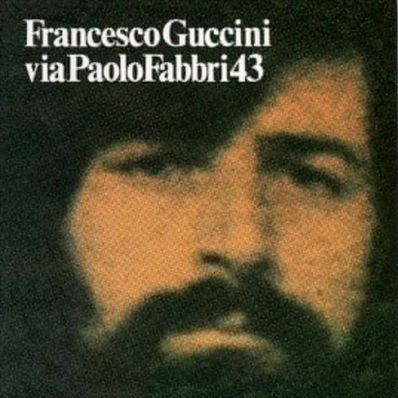
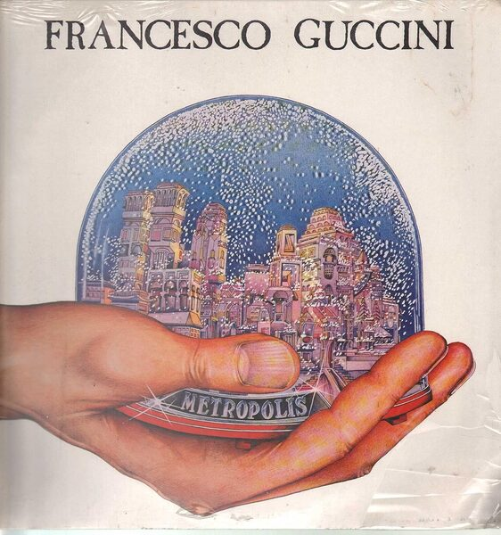
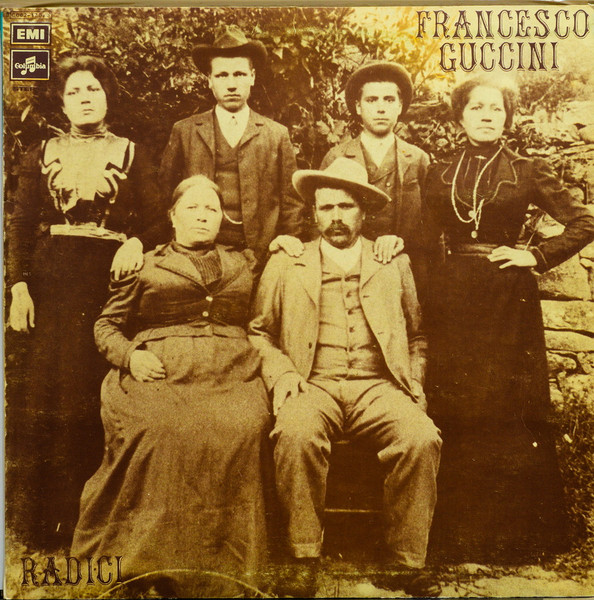
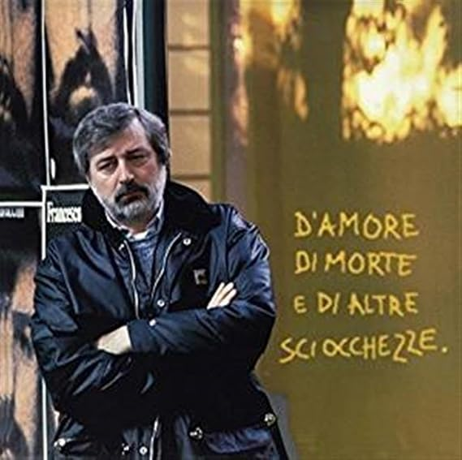
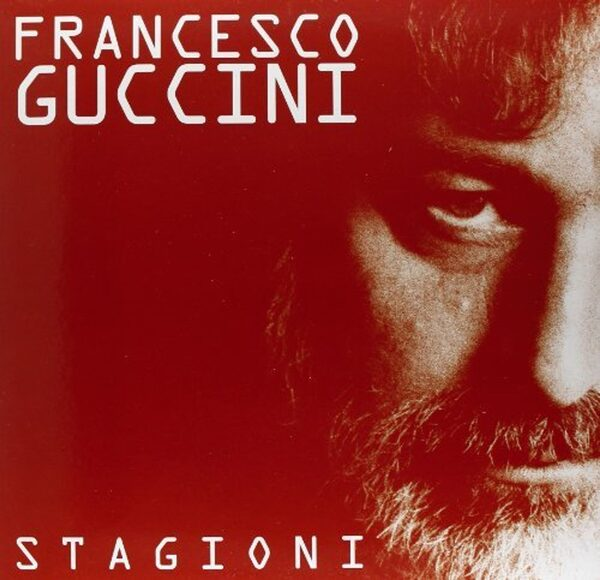
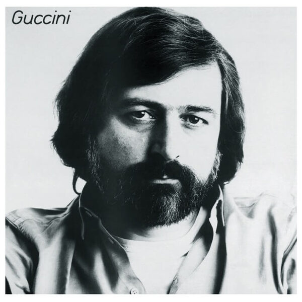
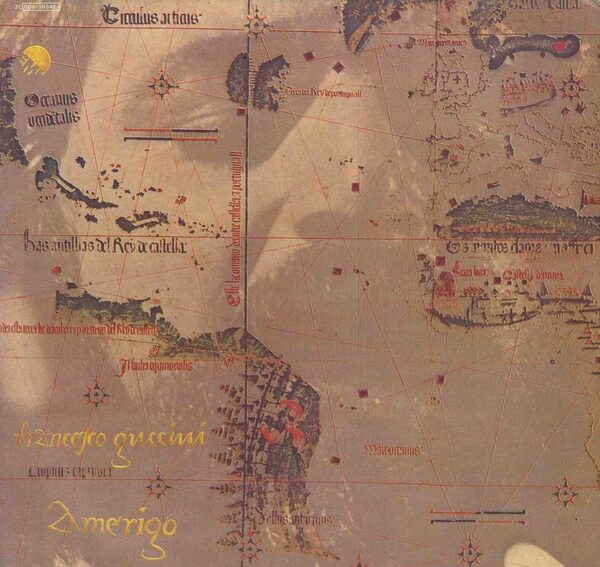

Back to Hobbies & Blog
Music
From playing guitar and saxophone to listening to jazz, blues, and bossa nova. My neighbors know about my vinyl collection and its peculiar tastes. Music is the background to every field campaign and every late-night data analysis session.
Fra la via Emilia e la Luna
Post · August 2026 The Reggaeton Party playlist on Spotify
Post · January 2026 Folk Beat n.1
Guccini · 1967 · © RCA Italiana
Guccini · 1976 · © EMI Italiana
Guccini · 1981 · © EMI Italiana
Guccini · 1972 · © RCA Italiana
Guccini · 1996 · © EMI Italiana
Guccini · 2000 · © BMG Ricordi
Guccini · 1983 · © EMI Italiana
Guccini · 1978 · © EMI Italiana
Post · August 2026 The Reggaeton Party playlist on Spotify
Post · January 2026 Folk Beat n.1
Guccini · 1967 · © RCA Italiana

Via Paolo Fabbri 43Guccini · 1976 · © EMI Italiana

MetropolisGuccini · 1981 · © EMI Italiana

RadiciGuccini · 1972 · © RCA Italiana

D'amore di morte e di altre sciocchezzeGuccini · 1996 · © EMI Italiana

StagioniGuccini · 2000 · © BMG Ricordi

GucciniGuccini · 1983 · © EMI Italiana

AmerigoGuccini · 1978 · © EMI Italiana
Tracklist
A1Fra la via Emilia e la Luna
A personal farewell to Francesco Guccini (1940–2026): a first concert at fourteen, an essay that earned a 3/10, three cities, lunar regolith, and a contract about to expire. Written in Italian.
August 2026 A2The Reggaeton Party playlist on Spotify
Nostalgia for Spain, the history of the genre from Panamanian dembow to Bad Bunny, and an analysis of its musical characteristics (BPM, percussive structure, use of vocals).
January 2026